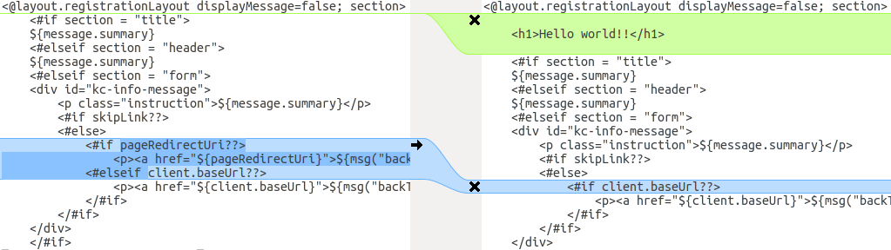
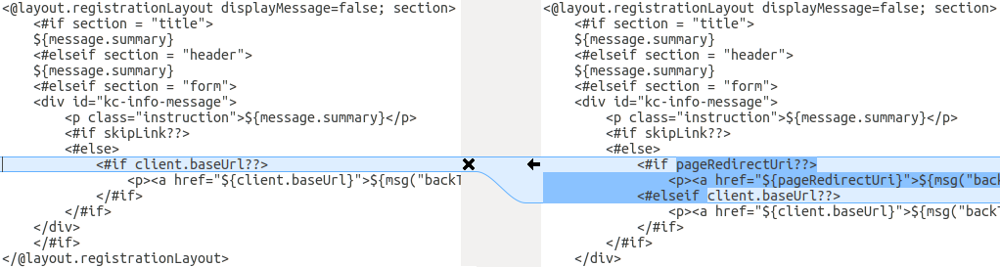
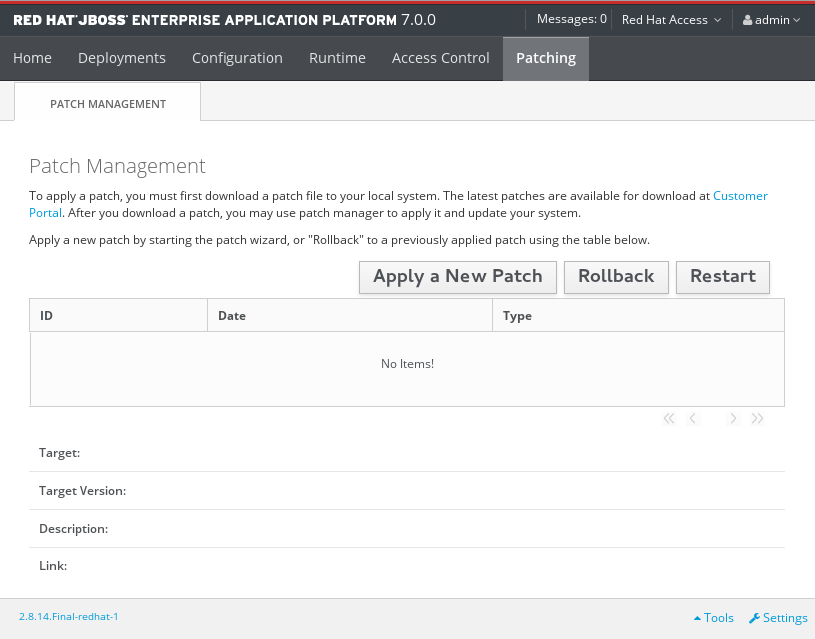
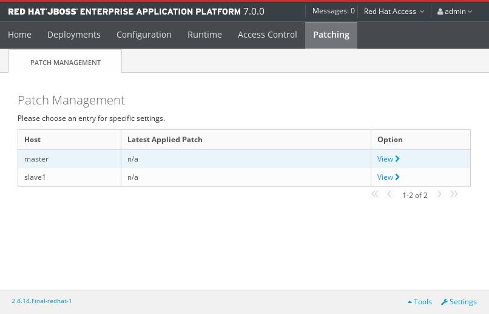
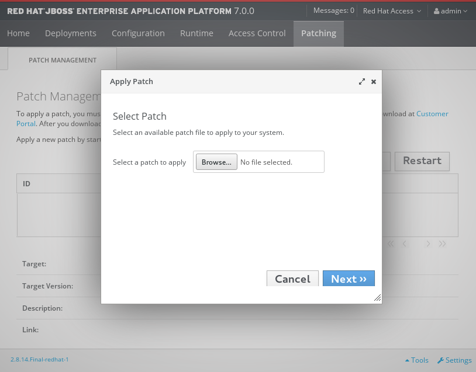
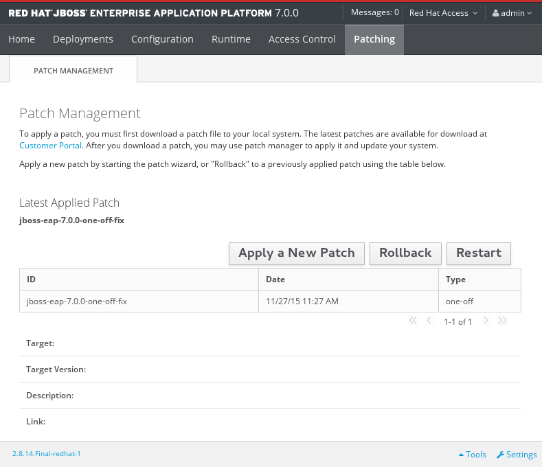
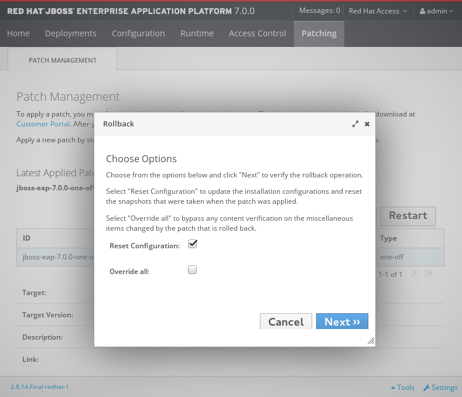

Upgrading Guide
For Use with Red Hat Single Sign-On Continuous Delivery 8
Abstract
- 1. Introduction
- 2. Changes
- 2.1. RH-SSO 7.3
- 2.1.1. Changes to Authorization Services
- 2.1.2. Client Templates changed to Client Scopes
- 2.1.3. New default client scopes
- 2.1.4. Upgrade to EAP 7.2
- 2.1.5. Hostname configuration
- 2.1.6. JavaScipt Adapter Promise
- 2.1.7. Microsoft Identity Provider updated to use the Microsoft Graph API
- 2.1.8. Google Identity Provider updated to use Google Sign-in authentication system
- 2.1.9. LinkedIn Social Broker Updated to Version 2 of LinkedIn APIs
- 2.2. RH-SSO 7.2
- 2.2.1. New Password Hashing algorithms
- 2.2.2. ID Token requires scope=openid
- 2.2.3. Microsoft SQL Server requires extra dependency
- 2.2.4. Added session_state parameter to OpenID Connect Authentication Response
- 2.2.5. Microsoft Identity Provider updated to use the Microsoft Graph API
- 2.2.6. Google Identity Provider updated to use Google Sign-in authentication system
- 2.2.7. LinkedIn Social Broker Updated to Version 2 of LinkedIn APIs
- 2.3. RH-SSO 7.1
- 2.1. RH-SSO 7.3
- 3. Upgrading Red Hat Single Sign-On Server
- 4. Upgrading Red Hat Single Sign-On Adapters
Chapter 1. Introduction
Red Hat Single Sign-On (RH-SSO) 7.3 is based on the Keycloak project and provides security for your web applications by providing Web single sign-on capabilities based on popular standards such as SAML 2.0, OpenID Connect, and OAuth 2.0. The Red Hat Single Sign-On Server can act as a SAML or OpenID Connect-based identity provider, mediating with your enterprise user directory or third-party SSO provider for identity information and your applications using standards-based tokens.
RH-SSO provides two operating modes: standalone server or managed domain. The standalone server operating mode represents running RH-SSO as a single server instance. The managed domain operating mode allows for the management of multiple RH-SSO instances from a single control point. The upgrade process differs depending on which operating mode has been implemented. Specific instructions for each mode are provided where applicable.
The purpose of this guide is to document the steps that are required to successfully upgrade from Red Hat Single Sign-On 7.2 to Red Hat Single Sign-On 7.3.
1.1. About Upgrades
1.1.1. Major Upgrades
A major upgrade or migration is required when RH-SSO is upgraded from one major release to another, for example, from Red Hat Single Sign-On 7.2 to Red Hat Single Sign-On 8.0. There may be breaking API changes between major releases that could require rewriting parts of applications or server extensions.
1.1.2. Minor Updates
Red Hat Single Sign-On periodically provides point releases, which are minor updates that include bug fixes, security fixes, and new features. If you plan to upgrade from one Red Hat Single Sign-On point release to another, for example, from Red Hat Single Sign-On 7.2 to Red Hat Single Sign-On 7.3, code changes should not be required for applications or custom server extensions as long as no private, unsupported, or tech preview APIs are used.
1.1.3. Micro Updates
Red Hat Single Sign-On 7 also periodically provides micro releases that contain bug and security fixes. Micro releases increment the minor release version by the last digit, for example from 7.2.0 to 7.2.1. These release do not require migration and should not impact the server configuration files. The patch management system for ZIP installations can also rollback the patch and server configuration.
A micro release only contains the artifacts that have changed. For example if Red Hat Single Sign-On 7.2.1 contains changes to the server and the JavaScript adapter, but not the EAP adapter, only the server and JavaScript adapter are released and require updating.
Chapter 2. Changes
Review these changes carefully before upgrading.
2.1. RH-SSO 7.3
The following changes have occurred from RH-SSO 7.2 to RH-SSO 7.3.
2.1.1. Changes to Authorization Services
We added support for UMA 2.0. This version of the UMA specification introduced some important changes on how permissions are obtained from the server.
Here are the main changes introduced by UMA 2.0 support. See Authorization Services Guide for details.
- Authorization API was removed
- Prior to UMA 2.0 (UMA 1.0), client applications were using the Authorization API to obtain permissions from the server in the format of a RPT. The new version of UMA specification has removed the Authorization API which was also removed from Red Hat Single Sign-On. In UMA 2.0, RPTs can now be obtained from the token endpoint by using a specific grant type. See Authorization Services Guide for details.
- Entitlement API was removed
- With the introduction of UMA 2.0, we decided to leverage the token endpoint and UMA grant type to allow obtaining RPTs from Red Hat Single Sign-On and avoid having different APIs. The functionality provided by the Entitlement API was kept the same and is still possible to obtain permissions for a set of one or more resources and scopes or all permissions from the server in case no resource or scope is provided. See Authorization Services Guide for details.
- Changes to UMA Discovery Endpoint
- UMA Discovery document changed, see Authorization Services Guide for details.
- Changes to Red Hat Single Sign-On Authorization JavaScript Adapter
The Red Hat Single Sign-On Authorization JavaScript Adapter (keycloak-authz.js) changed in order to comply with the changes introduced by UMA 2.0 while keeping the same behavior as before. The main change is on how you invoke both
authorizationandentitlementmethods which now expect a specific object type representing an authorization request. This new object type provides more flexibility on how permissions can be obtained from the server by supporting the different parameters supported by the UMA grant type. See Authorization Services Guide for details.One of the main changes introduced by this release is that you are no longer required to exchange access tokens with RPTs in order to access resources protected by a resource server (when not using UMA). Depending on how the policy enforcer is configured on the resource server side, you can just send regular access tokens as a bearer token and permissions will still be enforced.
- Changes to Red Hat Single Sign-On Authorization Client Java API
-
When upgrading to the new version of Red Hat Single Sign-On Authorization Client Java API, you’ll notice that some representation classes were moved to a different package in
org.keycloak:keycloak-core.
2.1.2. Client Templates changed to Client Scopes
We added support for Client Scopes, which requires some attention during migration.
- Client Templates changed to Client Scopes
- Client Templates were changed to Client Scopes. If you had any Client Templates, their protocol mappers and role scope mappings will be preserved.
- Spaces replaced in the names
-
Client templates with the space character in the name were renamed by replacing spaces with an underscore, because spaces are not allowed in the name of client scopes. For example, a client template
my templatewill be changed to client scopemy_template. - Linking Client Scopes to Clients
-
For clients which had the client template, the corresponding client scope is now added as
Default Client Scopeto the client. So protocol mappers and role scope mappings will be preserved on the client. - Realm Default Client Scopes not linked with existing clients
-
During the migration, the list of built-in client scopes is added to each realm as well as list of
Realm Default Client Scopes. However, existing clients are NOT upgraded and new client scopes are NOT automatically added to them. Also all the protocol mappers and role scope mappings are kept on existing clients. In the new version, when you create a new client, it automatically has Realm Default Client Scopes attached to it and it does not have any protocol mappers attached to it. We did not change existing clients during migration as it would be impossible to properly detect customizations, which you will have for protocol mappers of the clients, for example. If you want to update existing clients (remove protocol mappers from them and link them with client scopes), you will need to do it manually. - Consents need to be confirmed again
- The client scopes change required the refactoring of consents. Consents now point to client scopes, not to roles or protocol mappers. Because of this change, the previously confirmed persistent consents by users are not valid anymore and users need to confirm the consent page again after the migration.
- Some configuration switches removed
-
The switch
Scope Param Requiredwas removed from Role Detail. The switchesConsent RequiredandConsent Textwere removed from the Protocol Mapper details. Those switches were replaced by the Client Scope feature.
2.1.3. New default client scopes
We have added new realm default client scopes roles and web-origins. These client scopes contain protocol mappers to add the roles of the user and allowed web origins to the token. During migration, these client scopes should be automatically added to all the OpenID Connect clients as default client scopes. Hence no setup should be required after database migration is finished.
2.1.3.1. Protocol mapper SPI addition
Related to this, there is a small addition in the (unsupported) Protocol Mappers SPI. You can be affected only if you implemented a custom ProtocolMapper. There is a new getPriority() method on the ProtocolMapper interface. The method has the default implementation set to return 0. If your protocol mapper implementation relies on the roles in the access token realmAccess or resourceAccess properties, you may need to increase the priority of your mapper.
2.1.3.2. Audience resolving
Audiences of all the clients, for which authenticated user has at least one client role in the token, are automatically added to the aud claim in the access token now. On the other hand, an access token may not automatically contain the audience of the frontend client, for which it was issued. Read the Server Administration Guide for more details.
2.1.4. Upgrade to EAP 7.2
The Red Hat Single Sign-On server was upgraded to use EAP 7.2 as the underlying container. This does not directly involve any specific Red Hat Single Sign-On server functionality, but there are few changes related to the migration, which worth mentioning.
- Dependency updates
- The dependencies were updated to the versions used by EAP 7.2 server. For example, Infinispan is now 9.3.1.Final.
- Configuration changes
-
There are few configuration changes in the
standalone(-ha).xmlanddomain.xmlfiles. You should follow the Section 3.1.2, “Upgrading Red Hat Single Sign-On server” section to handle the migration of configuration files automatically. - Cross-Datacenter Replication changes
- You will need to upgrade JDG server to version 7.3.0. The older version may still work, but it is not guaranteed as we don’t test it anymore.
-
There is a need to add
protocolVersionproperty with the value2.6to the configuration of theremote-storeelement in the Red Hat Single Sign-On configuration. This is required as there is a need to downgrade the version of HotRod protocol to be compatible with the version used by JDG 7.3.0.
2.1.5. Hostname configuration
In previous versions it was recommended to use a filter to specify permitted hostnames. It is now possible to set a fixed hostname which makes it easier to make sure the valid hostname is used and also allows internal applications to invoke Red Hat Single Sign-On through an alternative URL, for example an internal IP address. It is recommended that you switch to this approach in production.
2.1.6. JavaScipt Adapter Promise
To use native JavaScript promise with the JavaScript adapter it is now required to set promiseType to native in the init options.
In the past if native promise was available a wrapper was returned that provided both the legacy Keycloak promise and the native promise. This was causing issues as the error handler was not always set prior to the native error event, which resulted in Uncaught (in promise) error.
2.1.7. Microsoft Identity Provider updated to use the Microsoft Graph API
The Microsoft Identity Provider implementation in Red Hat Single Sign-On used to rely on the Live SDK endpoints for authorization and obtaining the user profile. From November 2018 onwards, Microsoft is removing support for the Live SDK API in favor of the new Microsoft Graph API. The Red Hat Single Sign-On identity provider has been updated to use the new endpoints so if this integration is in use make sure you upgrade to the latest Red Hat Single Sign-On version.
Legacy client applications registered under "Live SDK applications" won’t work with the Microsoft Graph endpoints due to changes in the id format of the applications. If you run into an error saying that the application identifier was not found in the directory, you will have to register the client application again in the Microsoft Application Registration portal to obtain a new application id.
2.1.8. Google Identity Provider updated to use Google Sign-in authentication system
The Google Identity Provider implementation in Red Hat Single Sign-On used to rely on the Google+ API endpoints endpoints for authorization and obtaining the user profile. From March 2019 onwards, Google is removing support for the Google+ API in favor of the new Google Sign-in authentication system. The Red Hat Single Sign-On identity provider has been updated to use the new endpoints so if this integration is in use make sure you upgrade to the latest Red Hat Single Sign-On version.
If you run into an error saying that the application identifier was not found in the directory, you will have to register the client application again in the Google API Console portal to obtain a new application id and secret.
It is possible that you will need to adjust custom mappers for non-standard claims that were provided by Google+ user information endpoint and are provided under different name by Google Sign-in API. Please consult Google documentation for the most up-to-date information on available claims.
2.1.9. LinkedIn Social Broker Updated to Version 2 of LinkedIn APIs
Accordingly with LinkedIn, all developers need to migrate to version 2.0 of their APIs and OAuth 2.0. As such, we have updated our LinkedIn Social Broker.
Existing deployments using this broker may start experiencing errors when fetching user’s profile using version 2 of LinkedIn APIs. This error may be related with the lack of permissions granted to the client application used to configure the broker which may not be authorized to access the Profile API or request specific OAuth2 scopes during the authentication process.
Even for newly created LinkedIn client applications, you need to make sure that the client is able to request the r_liteprofile and r_emailaddress OAuth2 scopes, at least, as well that the client application can fetch current member’s profile from the https://api.linkedin.com/v2/me endpoint.
Due to these privacy restrictions imposed by LinkedIn in regards to access to member’s information and the limited set of claims returned by the current member’s Profile API, the LinkedIn Social Broker is now using the member’s email address as the default username. That means that the r_emailaddress is always set when sending authorization requests during the authentication.
2.2. RH-SSO 7.2
The following changes have occurred from RH-SSO 7.1 to RH-SSO 7.2.
2.2.1. New Password Hashing algorithms
We have added two new password hashing algorithms (pbkdf2-sha256 and pbkdf2-sha512). New realms will use the pbkdf2-sha256 hashing algorithm with 27500 hashing iterations. Since pbkdf2-sha256 is slightly faster than pbkdf2 the iterations was increased to 27500 from 20000.
Existing realms are upgraded if the password policy contains the default value for the hashing algorithm (not specified) and iteration (20000). If you have changed the hashing iterations, you need to manually change to pbkdf2-sha256 if you’d like to use the more secure hashing algorithm.
2.2.2. ID Token requires scope=openid
In RH-SSO 7.0, the ID Token was returned regardless if scope=openid query parameter was present or not in authorization request. This is incorrect according to the OpenID Connect specification.
In RH-SSO 7.1, we added this query parameter to adapters, but left the old behavior to accommodate migration.
In RH-SSO 7.2, this behavior has changed and the scope=openid query parameter is now required to mark the request as an OpenID Connect request. If this query parameter is omitted the ID Token will not be generated.
2.2.3. Microsoft SQL Server requires extra dependency
Microsoft JDBC Driver 6.0 requires additional dependency added to the JDBC driver module. If you observe an NoClassDefFoundError error when using Microsoft SQL Server please add the following dependency to your JDBC driver module.xml file:
<module name="javax.xml.bind.api"/>
2.2.4. Added session_state parameter to OpenID Connect Authentication Response
The OpenID Connect Session Management specification requires that the parameter session_state is present in the OpenID Connect Authentication Response.
In RH-SSO 7.1, we did not have this parameter, but now Red Hat Single Sign-On adds this parameter by default, as required by the specification.
However, some OpenID Connect / OAuth2 adapters, and especially older Red Hat Single Sign-On adapters (such as RH-SSO 7.1 and older), may have issues with this new parameter.
For example, the parameter will be always present in the browser URL after successful authentication to the client application. If you use RH-SSO 7.1 or a legacy OAuth2 / OpenID Connect adapter, it may be useful to disable adding the session_state parameter to the authentication response. This can be done for the particular client in the Red Hat Single Sign-On admin console, in client details in the section with OpenID Connect Compatibility Modes, described in Section 4.1, “Compatibility with older adapters”. There is the Exclude Session State From Authentication Response switch, which can be turned on to prevent adding the session_state parameter to the Authentication Response.
2.2.5. Microsoft Identity Provider updated to use the Microsoft Graph API
The Microsoft Identity Provider implementation in Red Hat Single Sign-On up to version 7.2.4 relies on the Live SDK endpoints for authorization and obtaining the user profile. From November 2018 onwards, Microsoft is removing support for the Live SDK API in favor of the new Microsoft Graph API. The Red Hat Single Sign-On identity provider has been updated to use the new endpoints so if this integration is in use make sure you upgrade to Red Hat Single Sign-On version 7.2.5 or later.
Legacy client applications registered under "Live SDK applications" won’t work with the Microsoft Graph endpoints due to changes in the id format of the applications. If you run into an error saying that the application identifier was not found in the directory, you will have to register the client application again in the Microsoft Application Registration portal to obtain a new application id.
2.2.6. Google Identity Provider updated to use Google Sign-in authentication system
The Google Identity Provider implementation in Red Hat Single Sign-On up to version 7.2.5 relies on the Google+ API endpoints endpoints for authorization and obtaining the user profile. From March 2019 onwards, Google is removing support for the Google+ API in favor of the new Google Sign-in authentication system. The Red Hat Single Sign-On identity provider has been updated to use the new endpoints so if this integration is in use make sure you upgrade to Red Hat Single Sign-On version 7.2.6 or later.
If you run into an error saying that the application identifier was not found in the directory, you will have to register the client application again in the Google API Console portal to obtain a new application id and secret.
It is possible that you will need to adjust custom mappers for non-standard claims that were provided by Google+ user information endpoint and are provided under different name by Google Sign-in API. Please consult Google documentation for the most up-to-date information on available claims.
2.2.7. LinkedIn Social Broker Updated to Version 2 of LinkedIn APIs
Accordingly with LinkedIn, all developers need to migrate to version 2.0 of their APIs and OAuth 2.0. As such, we have updated our LinkedIn Social Broker so if this integration is in use make sure you upgrade to Red Hat Single Sign-On version 7.2.6 or later.
Existing deployments using this broker may start experiencing errors when fetching user’s profile using version 2 of LinkedIn APIs. This error may be related with the lack of permissions granted to the client application used to configure the broker which may not be authorized to access the Profile API or request specific OAuth2 scopes during the authentication process.
Even for newly created LinkedIn client applications, you need to make sure that the client is able to request the r_liteprofile and r_emailaddress OAuth2 scopes, at least, as well that the client application can fetch current member’s profile from the https://api.linkedin.com/v2/me endpoint.
Due to these privacy restrictions imposed by LinkedIn in regards to access to member’s information and the limited set of claims returned by the current member’s Profile API, the LinkedIn Social Broker is now using the member’s email address as the default username. That means that the r_emailaddress is always set when sending authorization requests during the authentication.
2.3. RH-SSO 7.1
The following changes have occurred from RH-SSO 7.0 to RH-SSO 7.1.
2.3.1. Realm Keys
For RH-SSO 7.0, only one set of keys could be associated with a realm. This meant that when changing the keys, all current cookies and tokens would be invalidated and all users would have to re-authenticate. For RH-SSO 7.1, support for multiple keys for one realm has been added. At any given time, one set of keys is the active set used for creating signatures, but there can be multiple keys used to verify signatures. This means that old cookies and tokens can be verified, then refreshed with the new signatures, allowing users to remain authenticated when keys are changed. There are also some changes to how keys are managed through the Admin Console and Admin REST API; for more details see Realm Keys in the Server Administration Guide.
To allow seamless key rotation you must remove hard-coded keys from client adapters. The client adapters will automatically retrieve keys from the server as long as the realm key is not specified. Client adapters will also retrieve new keys automatically when keys are rotated.
2.3.2. Client Redirect URI Matching
For RH-SSO 7.0, query parameters are ignored when matching valid redirect URIs for a client. For RH-SSO 7.1, query parameters are no longer ignored. If you need to include query parameters in the redirect URI you must specify the query parameters in the valid redirect URI for the client (for example, https://hostname/app/login?foo=bar) or use a wildcard (for example, https://hostname/app/login/*). Fragments are also no longer permitted in Valid Redirect URIs (that is, https://hostname/app#fragment).
2.3.3. Automatically Redirect to Identity Provider
For RH-SSO 7.1, identity providers cannot be set as the default authentication provider. To automatically redirect to an identity provider for RH-SSO 7.1, you must now configure the identity provider redirector. For more information see Default Identity Provider in the Server Administration Guide. If you previously had an identity provider with the default authentication provider option set, this value is automatically used as the value for the identity provider redirector when the server is upgraded to RH-SSO 7.1.
2.3.4. Admin REST API
For RH-SSO 7.0, paginated endpoints in the Admin REST API return all results if the maxResults query parameter was not specified. This could cause issues with a temporary high load and requests timing out when a large number of results were returned (for example, users). For RH-SSO 7.1, a maximum of 100 results are returned if a value for maxResults is not specified. You can return all results by specifying maxResults as -1.
2.3.5. Server Configuration
For RH-SSO 7.0, server configuration is split between the keycloak-server.json file and the standalone/domain.xml or domain.xml file. For RH-SSO 7.1, the keycloak-server.json file has been removed and all server configuration is done through the standalone.xml or domain.xml file. The upgrading procedure for RH-SSO 7.1 automatically migrates the server configuration from the keycloak-server.json file to the standalone.xml or domain.xml file.
2.3.6. Key Encryption Algorithm in SAML Assertions
For RH-SSO 7.1, keys in SAML assertions and documents are now encrypted using the RSA-OAEP encryption scheme. To use encrypted assertions, ensure your service providers support this encryption scheme. In the event that you have service providers that do not support RSA-OAEP, RH-SSO can be configured to use the legacy RSA-v1.5 encryption scheme by starting the server with the system property "keycloak.saml.key_trans.rsa_v1.5" set to true. If you do this, you should upgrade your service providers as soon as possible to be able to revert to the more secure RSA-OAEP encryption scheme.
Chapter 3. Upgrading Red Hat Single Sign-On Server
The upgrade process for the Red Hat Single Sign-On server is different if you are upgrading to a different minor release or not.
If you are upgrading to a new minor release, for example from 7.0.0 to 7.1.0, follow the steps in Minor Upgrades.
If you are upgrading to a new micro release, for example from 7.1.0 to 7.1.1, follow the steps in Micro Upgrades.
3.1. Minor Upgrades
3.1.1. Preparing for Upgrading
Before you upgrade, be aware of the order in which you need to perform the upgrade steps. Also note potential issues that can occur within the upgrade process. In general, you must upgrade Red Hat Single Sign-On server first, and then upgrade the adapters.
- Prior to applying the upgrade, handle any open transactions and delete the data/tx-object-store/ transaction directory.
- Back up the old installation (configuration, themes, and so on).
- Back up the database. For detailed information on how to back up the database, see the documentation for the relational database you are using.
Upgrade Red Hat Single Sign-On server.
- Testing the upgrade in a non-production environment first, to prevent any installation issues from being exposed in production, is a best practice.
- Be aware that after the upgrade the database will no longer be compatible with the old server
- Ensure the upgraded server is functional before upgrading adapters in production.
- If you need to revert the upgrade, first restore the old installation, and then restore the database from the backup copy.
- Upgrade the adapters.
3.1.2. Upgrading Red Hat Single Sign-On server
It is important that you upgrade Red Hat Single Sign-On server before upgrading the adapters.
To upgrade Red Hat Single Sign-On server, complete the following steps:
- Prior to applying the upgrade, handle any open transactions and delete the data/tx-object-store/ transaction directory.
- Download the new server archive
- Move the downloaded archive to the desired location.
- Extract the archive. This step installs a clean instance of the latest Red Hat Single Sign-On release.
For standalone installations, copy the RHSSO_HOME/standalone/ directory from the previous installation over the directory in the new installation.
For domain installations, copy the RHSSO_HOME/domain/ directory from the previous installation over the directory in the new installation.
For domain installations, create the empty directory RHSSO_HOME/domain/deployments.
NOTE: Files in the bin directory should not be overwritten by the files from previous versions. Changes should be made manually.
- Copy any custom modules that have been added to the modules directory.
- Run the applicable upgrade script below.
To upgrade Red Hat Single Sign-On server RPM distribution, complete the following steps:
- Prior to applying the upgrade, handle any open transactions and delete the /var/opt/rh/rh-sso7/lib/keycloak/standalone/data/tx-object-store/ transaction directory.
Make sure you have subscribed to proper repositories containing JBOSS EAP and Red Hat Single Sign-On.
subscription-manager repos --enable=jb-eap-7.1-for-rhel-7-server-rpms subscription-manager repos --enable=rh-sso-7.2-for-rhel-7-server-rpms
NoteTo disable older product repositories for both JBOSS EAP and Red Hat Single Sign-On use:
subscription-manager repos --disable=<OLDER_PRODUCT_REPO>
To check the repositories use:
yum repolist
The RPM upgrade process will not replace any of your modified configuration files, and will instead create .rpmnew files for the default configuration of the new Red Hat Single Sign-On version.
To activate any new features in the new release, such as new subsystems, you must manually merge each .rpmnew file into your existing configuration files
- Copy any custom modules that have been added to the modules directory.
Run the applicable upgrade script as described below.
NoteRed Hat Single Sign-On RPM server distribution is using
RHSSO_HOME=/opt/rh/rh-sso7/root/usr/share/keycloakUse it when calling migration scripts below.
3.1.2.1. Running the Standalone Mode Upgrade Script
To run the upgrade script for standalone mode, complete the following steps:
- If you are using a different configuration file than the default one, edit the migration script to specify the new file name.
- Stop the server.
Run the upgrade script:
bin/jboss-cli.sh --file=bin/migrate-standalone.cli
3.1.2.2. Running the Standalone-High Availability Mode Upgrade Script
For standalone-high availability (HA) mode, all instances must be upgraded at the same time.
To run the upgrade script for standalone-HA mode, complete the following steps:
- If you are using a different configuration file than the default one, edit the migration script to specify the new file name.
- Stop the server.
Run the upgrade script:
bin/jboss-cli.sh --file=bin/migrate-standalone-ha.cli
3.1.2.3. Running the Domain Mode Upgrade Script
For domain mode, all instances must be upgraded at the same time.
To run the upgrade script for domain mode, complete the following steps:
- If you have changed the profile name, you must edit the upgrade script to change a variable near the beginning of the script.
- Edit the domain script to include the location of the keycloak-server.json file.
- Stop the server.
Run the upgrade script on the domain controller only:
bin/jboss-cli.sh --file=bin/migrate-domain.cli
3.1.2.4. Running the Domain-clustered Mode Upgrade Script
For domain-clustered mode, all instances must be upgraded at the same time.
To run the upgrade script for domain-clustered mode, complete the following steps:
- If you have changed the profile name, you must edit the upgrade script to change a variable near the beginning of the script.
- Edit the domain-clustered script to include the location of the keycloak-server.json file.
- Stop the server.
Run the upgrade script on the domain controller only:
bin/jboss-cli.sh --file=bin/migrate-domain-clustered.cli
3.1.3. Migrating the Database
Red Hat Single Sign-On can automatically migrate the database schema, or you can choose to do it manually. By default the database is automatically migrated when you start the new installation for the first time.
3.1.3.1. Automatic Relational Database Migration
To enable automatic upgrading of the database schema, set the migrationStrategy property value to "update" for the default connectionsJpa provider:
<spi name="connectionsJpa">
<provider name="default" enabled="true">
<properties>
...
<property name="migrationStrategy" value="update"/>
</properties>
</provider>
</spi>Or run this CLI command:
/subsystem=keycloak-server/spi=connectionsJpa/provider=default/:map-put(name=properties,key=migrationStrategy,value=update)
When you start the server with this setting your database is automatically migrated if the database schema has changed in the new version.
3.1.3.2. Manual Relational Database Migration
To enable manual upgrading of the database schema, set the migrationStrategy property value to "manual" for the default connectionsJpa provider:
<spi name="connectionsJpa">
<provider name="default" enabled="true">
<properties>
...
<property name="migrationStrategy" value="manual"/>
</properties>
</provider>
</spi>Or run this CLI command:
/subsystem=keycloak-server/spi=connectionsJpa/provider=default/:map-put(name=properties,key=migrationStrategy,value=manual)
When you start the server with this configuration it checks if the database needs to be migrated. The required changes are written to an SQL file that you can review and manually run against the database. For further details on how to apply this file to the database, see the documentation for the relational database you’re using. After the changes have been written to the file, the server exits.
3.1.4. Migrating Themes
If you have created any custom themes they must be migrated to the new server. Any changes to the built-in themes might need to be reflected in your custom themes, depending on which aspects you have customized.
You must copy your custom themes from the old server "themes" directory to the new server "themes" directory. After that you need to review the changes below and consider if the changes need to be applied to your custom theme.
In summary:
- If you have customized any of the changed templates listed below you need to compare the template from the base theme to see if there are changes you need to apply.
- If you have customized any of the styles and are extending the Red Hat Single Sign-On themes you need to review the changes to the styles. If you are extending the base theme you can skip this step.
- If you have customized messages you might need to change the key or value or to add additional messages.
Each step is described in more detail below the list of changes.
3.1.4.1. Theme changes RH-SSO 7.3
Templates
- Account: account.ftl
- Account: applications.ftl
- Account: resource-detail.ftl (new)
- Account: resources.ftl (new)
- Account: template.ftl
- Account: totp.ftl
- Email-html: email-test.ftl
- Email-html: email-verification-with-code.ftl (new)
- Email-html: email-verification.ftl
- Email-html: event-login_error.ftl
- Email-html: event-removed_totp.ftl
- Email-html: event-update_password.ftl
- Email-html: event-update_totp.ftl
- Email-html: executeActions.ftl
- Email-html: identity-provider-link.ftl
- Email-html: password-reset.ftl
- Email-text: email-verification-with-code.ftl (new)
- Email-text: email-verification.ftl
- Email-text: executeActions.ftl
- Email-text: identity-provider-link.ftl
- Email-text: password-reset.ftl
- Login: cli_splash.ftl (new)
- Login: code.ftl
- Login: error.ftl
- Login: info.ftl
- Login: login-config-totp-text.ftl (new)
- Login: login-config-totp.ftl
- Login: login-idp-link-confirm.ftl
- Login: login-idp-link-email.ftl
- Login: login-oauth-grant.ftl
- Login: login-page-expired.ftl
- Login: login-reset-password.ftl
- Login: login-totp.ftl
- Login: login-update-password.ftl
- Login: login-update-profile.ftl
- Login: login-verify-email-code-text.ftl (new)
- Login: login-verify-email.ftl
- Login: login-x509-info.ftl
- Login: login.ftl
- Login: register.ftl
- Login: template.ftl
- Login: terms.ftl
- Welcome: index.ftl (new)
Messages
- Account: messages_en.properties
- Admin: admin-messages_en.properties
- Email: messages_en.properties
- Login: messages_en.properties
Styles
- Login: login-rhsso.css (new)
- Welcome: welcome-rhsso.css
3.1.4.2. Theme changes RH-SSO 7.2
Templates
- Account: account.ftl
- Account: applications.ftl
- Account: federatedIdentity.ftl
- Account: password.ftl
- Account: sessions.ftl
- Account: template.ftl
- Account: totp.ftl
- Admin: index.ftl
- Email: email-test.ftl (new)
- Email: email-verification.ftl
- Email: event-login_error.ftl
- Email: event-removed_totp.ftl
- Email: event-update_password.ftl
- Email: event-update_totp.ftl
- Email: executeActions.ftl
- Email: identity-provider-link.ftl
- Email: password-reset.ftl
- Login: bypass_kerberos.ftl (removed)
- Login: error.ftl
- Login: info.ftl
- Login: login-config-totp.ftl
- Login: login-idp-link-email.ftl
- Login: login-oauth-grant.ftl
- Login: login-page-expired.ftl (new)
- Login: login-reset-password.ftl
- Login: login-totp.ftl
- Login: login-update-password.ftl
- Login: login-update-profile.ftl
- Login: login-verify-email.ftl
- Login: login-x509-info.ftl (new)
- Login: login.ftl (new)
- Login: register.ftl (new)
- Login: template.ftl (new)
- Login: terms.ftl (new)
Messages
- Account: messages_en.properties
- Admin: admin-messages_en.properties
- Admin: messages_en.properties
- Email: messages_en.properties
- Login: messages_en.properties
Styles
- Account: account.css
- Login: login.css
3.1.4.3. Theme changes RH-SSO 7.1
Templates
- Account: account.ftl
- Account: federatedIdentity.ftl
- Account: totp.ftl
- Login: info.ftl
- Login: login-config-totp.ftl
- Login: login-reset-password.ftl
- Login: login.ftl
Messages
- Account: editAccountHtmlTtile renamed to editAccountHtmlTitle
- Account: role_uma_authorization added
- Login: loginTotpStep1 value changed
- Login: invalidPasswordGenericMessage added
- Login: invlidRequesterMessage renamed to invalidRequesterMessage
- Login: clientDisabledMessage added
Styles
- Account: account.css
- Login: login.css
3.1.4.4. Migrating Templates
If you have customized any of the templates you need to carefully review the changes that have been made to the templates to decide if you need to apply these changes to your customized templates. Most likely you will need to apply the same changes to your customized templates. If you have not customized any of the listed templates you can skip this section.
A best practice is to use a diff tool to compare the templates to see what changes you might need to make to your customized template. If you have only made minor changes it is simpler to compare the updated template to your customized template. However, if you have made many changes it might be easier to compare the new template to your customized old template, as this will show you what changes you need to make.
The following screenshot compares the info.ftl template from the Login theme and an example custom theme:
Comparison of the updated version of a Login theme template with an example custom Login theme template

From this comparison it is easy to identify that the first change ("Hello world!!") was a customization, while the second change ("if pageRedirectUri") is a change to the base theme. By copying the second change to your custom template, you have successfully updated your customized template.
For the alternative approach the following screenshot compares the info.ftl template from the old installation with the updated info.ftl template from the new installation:
Comparison of an example custom Login theme template with the updated version of the Login theme template

From this comparison it is easy to identify what has been changed in the base template. You will then manually have to make the same changes to your modified template. Since this approach is not as simple as the first approach, only use this approach if the first one is not feasible.
3.1.4.5. Migrating Messages
If you have added support for another language, you need to apply all the changes listed above. If you have not added support for another language, you might not need to change anything; you only have to make changes if you have changed an affected message in your theme.
For added values, review the value of the message in the base theme to determine if you need to customize that message.
For renamed keys, rename the key in your custom theme.
For changed values, check the value in the base theme to determine if you need to make changes to your custom theme.
3.1.4.6. Migrating Styles
If you are inheriting styles from the keycloak or rh-sso themes you might need to update your custom styles to reflect changes made to the styles from the built-in themes.
A best practice is to use a diff tool to compare the changes to stylesheets between the old server installation and the new server installation.
For example, using the diff command:
$ diff RHSSO_HOME_OLD/themes/keycloak/login/resources/css/login.css \ RHSSO_HOME_NEW/themes/keycloak/login/resources/css/login.css
Review the changes and determine if they affect your custom styling.
3.2. Micro Upgrades
3.2.1. Patching a ZIP/Installer Installation
Patches for a ZIP installation of RH-SSO are available to download from the Red Hat Customer Portal.
For multiple RH-SSO hosts in a managed domain environment, individual hosts can be patched from your RH-SSO domain controller.
In addition to applying a patch, you can also roll back the application of a patch.
3.2.1.1. Important Notes on ZIP Installation Patching
-
If you apply a patch that updates a module, the new patched JARs that are used at runtime are stored in
RHSSO_HOME/modules/system/layers/base/.overlays/PATCH_ID/MODULE. The original unpatched files are left inRHSSO_HOME/modules/system/layers/base/MODULE, but these JARs are not used at runtime. In order to significantly decrease the size of cumulative patch releases for RH-SSO 7 you cannot perform a partial roll back of a cumulative patch. For a patch that has been applied, you will only be able to roll back the whole patch.
For example, if you apply CP03 to RH-SSO 7.0.0, you will not be able to roll back to CP01 or CP02. If you would like the ability to roll back to each cumulative patch release, each cumulative patch must be applied separately in the order they were released.
3.2.1.2. Applying a Patch
RH-SSO servers that have been installed using the RPM method cannot be updated using these instructions. See the RPM instructions for applying a patch instead.
You can apply downloaded patches to a RH-SSO server using either the management CLI or the management console.
Applying a Patch to RH-SSO Using the Management CLI
- Download the patch file from the Red Hat Customer Portal at https://access.redhat.com/downloads/.
From the management CLI, apply the patch using the following command, including the appropriate path to the patch file:
patch apply /path/to/downloaded-patch.zip
NoteTo patch another RH-SSO host in a managed domain, you can specify the RH-SSO host name using the
--host=argument. For example:patch apply /path/to/downloaded-patch.zip --host=my-host
The patch tool will warn if there are any conflicts in attempting to apply the patch. If there are conflicts, enter
patch --helpfor the available arguments to re-run the command with an argument specifying how to resolve the conflicts.Restart the RH-SSO server for the patch to take effect:
shutdown --restart=true
Applying a Patch to RH-SSO Using the Management Console
- Download the patch file from the Red Hat Customer Portal at https://access.redhat.com/downloads/.
Open the management console and navigate to the Patch Management view.
For a standalone server, click the Patching tab.
The Patch Management Screen for a Standalone Server

For a server in a managed domain, click the Patching tab, then select the host that you want to patch from the table, and click View.
The Patch Management Screen for a Managed Domain

Click Apply a New Patch.
- If you are patching a managed domain host, on the next screen select whether to shutdown the servers on the host, and click Next.
Click the Browse button, select the downloaded patch you want to apply, and then click Next.
Apply Patch Screen
 .. If there are any conflicts in attempting to apply the patch, a warning will be displayed. Click View error details to see the detail of the conflicts. If there is a conflict, you can either cancel the operation, or select the Override all conflicts check box and click Next. Overriding conflicts will result in the content of the patch overriding any user modifications.
- After the patch has been successfully applied, select whether to restart RH-SSO now for the patch to take effect, and click Finish.
3.2.1.3. Rolling Back a Patch
You can roll back a previously applied RH-SSO patch using either the management CLI or the management console.
Rolling back a patch using the patch management system is not intended as a general uninstall functionality. It is only intended to be used immediately after the application of a patch that had undesirable effects.
Prerequisites
- A patch that was previously applied.
When following either procedure, use caution when specifying the value of the Reset Configuration option:
If set to TRUE, the patch rollback process will also roll back the RH-SSO server configuration files to their pre-patch state. Any changes that were made to the RH-SSO server configuration files after the patch was applied will be lost.
If set to FALSE, the server configuration files will not be rolled back. In this situation, it is possible that the server will not start after the rollback, as the patch may have altered configurations, such as namespaces, which may no longer be valid and will have to be fixed manually.
Rolling Back a Patch Using the Management CLI
From the management CLI, use the
patch historycommand to find the ID of the patch that you want to roll back.NoteIf you are using a managed domain, you must add the
--host=HOSTNAMEargument to the commands in this procedure to specify the RH-SSO host.Roll back the patch with the appropriate patch ID from the previous step.
patch rollback --patch-id=PATCH_ID --reset-configuration=TRUE
The patch tool will warn if there are any conflicts in attempting to roll back the patch. If there are conflicts, enter
patch --helpfor the available arguments to re-run the command with an argument specifying how to resolve the conflicts.Restart the RH-SSO server for the patch roll back to take effect:
shutdown --restart=true
Rolling Back a Patch Using the Management Console
Open the management console and navigate to the Patch Management view.
- For a standalone server, click the Patching tab.
- For a server in a managed domain, click the Patching tab, then select the host that you want to patch from the table, and click View.
Select the patch that you want to rollback from those listed in the table, then click Rollback.
Recent Patch History Screen
 .. If you are rolling back a patch on a managed domain host, on the next screen select whether to shutdown the servers on the host, and click Next.
Choose your options for the rollback process, then click Next.
Patch Rollback Options

Confirm the options and the patch to be rolled back, then click Next.
- If there are any conflicts in attempting to rollback the patch and the Override all option was not selected, a warning will be displayed. Click View error details to see the detail of the conflicts. If there is a conflict, you can either cancel the operation, or click Choose Options and try the operation again with the Override all check box selected. Overriding conflicts will result in the rollback operation overriding any user modifications.
- After the patch has been successfully rolled back, select whether to restart the RH-SSO server now for the changes to take effect, and click Finish.
3.2.1.4. Clearing Patch History
When patches are applied to a RH-SSO server, the content and history of the patches are preserved for use in rollback operations. If multiple cumulative patches are applied, the patch history may use a significant amount of disk space.
You can use the following management CLI command to remove all older patches that are not currently in use. When using this command, only the latest cumulative patch is preserved along with the GA release. This is only useful for freeing space if multiple cumulative patches have previously been applied.
/core-service=patching:ageout-history
If you clear the patch history, you will not be able to roll back a previously applied patch.
3.2.2. Patching an RPM Installation
Prerequisites
- Ensure that the base operating system is up to date, and is subscribed and enabled to get updates from the standard Red Hat Enterprise Linux repositories.
- Ensure that you are subscribed to the relevant RH-SSO repository for the update.
- Back up all configuration files, deployments, and user data.
For a managed domain, the RH-SSO domain controller should be updated first.
To install a RH-SSO patch via RPM from your subscribed repository, update your Red Hat Enterprise Linux system using the following command:
yum update
3.2.3. Patching a local Maven installation
If you have installed the RH-SSO Client Adapters Maven Repository using a ZIP file downloaded from the Red Hat Customer Portal, it may also need to be patched.
The RH-SSO Client Adapters Maven Repository is available online or as a downloaded ZIP file. If you use the publicly hosted online Maven repository, updates are automatically applied, and no action is required to update it. However, if you installed the Maven repository locally using the ZIP file, you are responsible for applying updates to the repository.
Whenever a cumulative patch is released for RH-SSO, a corresponding patch is provided for the RH-SSO Client Adapters Maven Repository. This patch is available in the form of an incremental ZIP file that is unzipped into the existing local repository. It does not overwrite or remove any existing files, so there is no rollback requirement.
Use the following procedure to apply updates to your locally installed RH-SSO Client Adapters Maven Repository.
3.2.3.1. Prerequisites
- Valid access and subscription to the Red Hat Customer Portal.
- The RH-SSO Client Adapters Maven Repository, previously downloaded and installed locally.
3.2.3.2. Update a locally installed RH-SSO Client Adapters Maven Repository
- Open a browser and log into the Red Hat Customer Portal.
- Select Downloads from the menu at the top of the page.
-
Select
Red Hat Single Sign-Onfrom the list. - Select the correct version of Red Hat Single Sign-On from the Version drop-down menu, then select the Patches tab.
-
Find
Red Hat Single Sign-On 7.x.y Client Adapters Incremental Maven Repositoryfrom the list, wherex.ymatch the cumulative patch number you want to update to. Select Download. Locate the path to your RH-SSO Client Adapters Maven Repository. This is referred to in the commands below as
RH-SSO_MAVEN_REPOSITORY_PATH. Unzip the downloaded Maven patch file directly into this directory, like this:For Red Hat Enterprise Linux, open a terminal and run the following command, replacing the values for the cumulative patch number and your Maven repository path:
$ unzip -o rh-sso-7.x.y-incremental-maven-repository.zip -d RH-SSO_MAVEN_REPOSITORY_PATH
-
For Microsoft Windows, use the Windows extraction utility to extract the ZIP file into the root of the
RH-SSO_MAVEN_REPOSITORY_PATHdirectory.
Chapter 4. Upgrading Red Hat Single Sign-On Adapters
It is important that you upgrade Red Hat Single Sign-On server first, and then upgrade the adapters. Earlier versions of the adapter might work with later versions of Red Hat Single Sign-On server, but earlier versions of Red Hat Single Sign-On server might not work with later versions of the adapter.
4.1. Compatibility with older adapters
As mentioned above, we try to support newer release versions of Red Hat Single Sign-On server working with older release versions of the adapters. However, in some cases we need to include fixes on the Red Hat Single Sign-On server side which may break compatibility with older versions of the adapters. For example, when we implement new aspects of the OpenID Connect specification, which older client adapter versions were not aware of.
In those cases, we added Compatibility modes. For OpenId Connect clients, there is a section named OpenID Connect Compatibility Modes in the Red Hat Single Sign-On admin console, on the page with client details. Here, you can disable some new aspects of the Red Hat Single Sign-On server to preserve compatibility with older client adapters. More details are available in the tool tips of individual switches.
4.2. Upgrading the EAP Adapter
If you originally installed the adapter using a downloaded archive, to upgrade the JBoss EAP adapter, complete the following steps:
- Download the new adapter archive.
-
Remove the previous adapter modules by deleting the
EAP_HOME/modules/system/add-ons/keycloak/directory. - Unzip the downloaded archive into EAP_HOME.
If you originally installed the adapter using RPM, to upgrade the adapter, complete the following steps, which are different depending on whether you are performing a minor or a micro upgrade:
- For minor upgrades, use Yum to uninstall any adapters you currently have installed and then use Yum to install the new version of the adapters.
- For micro upgrades, use Yum to upgrade the adapter. This is the only step for micro upgrades.
yum update
4.3. Upgrading the JavaScript Adapter
To upgrade a JavaScript adapter that has been copied to your web application, complete the following steps:
- Download the new adapter archive.
- Overwrite the keycloak.js file in your application with the keycloak.js file from the downloaded archive.
4.4. Upgrading the Node.js Adapter
To upgrade a Node.js adapter that has been copied to your web application, complete the following steps:
- Download the new adapter archive.
- Remove the existing Node.js adapter directory
- Unzip the updated file into its place
- Change the dependency for keycloak-connect in the package.json of your application